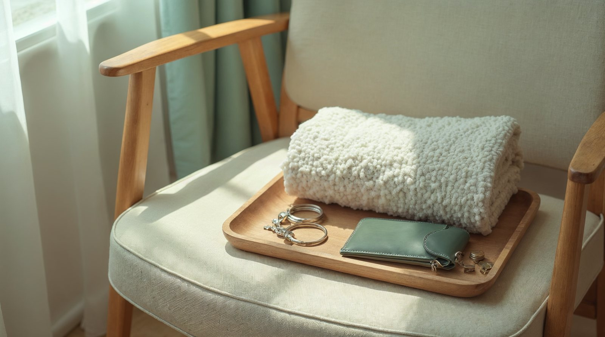
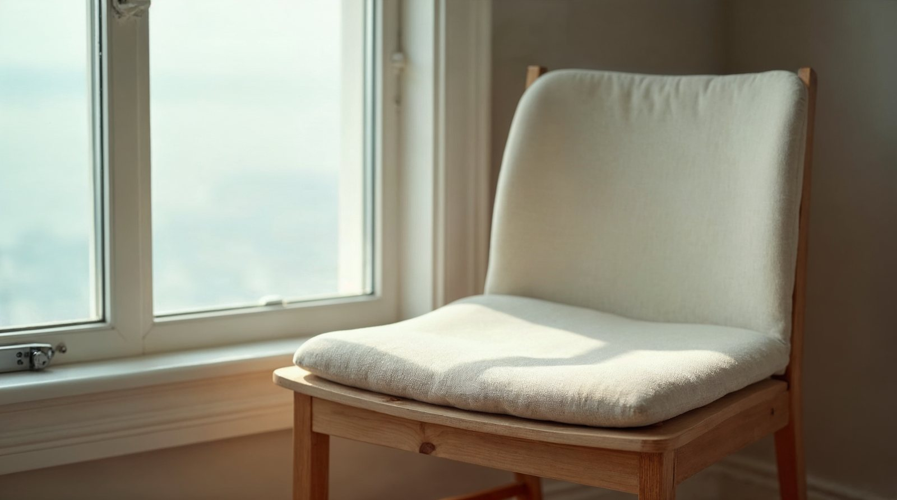
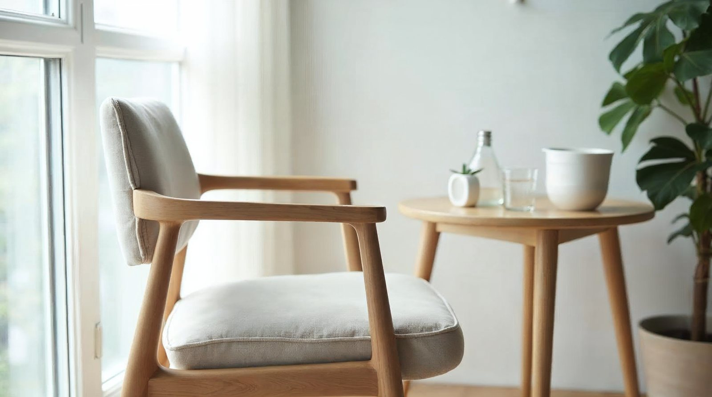
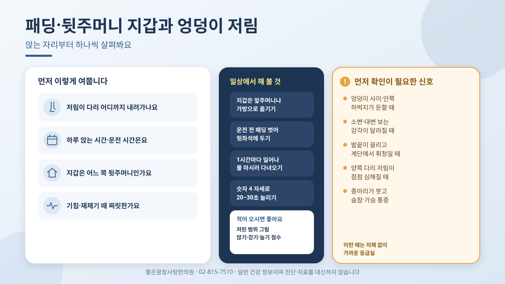

이종호 한의사 감수좋은꿈참사랑한의원 대표원장 (한의사 면허번호 19769)발행 2026-11-27 · 수정 2026-11-27
이 글의 차례
겨울엔 운전석에 앉을 때 두꺼운 패딩을 벗기 번거로워 그대로 앉게 되죠. 뒷주머니에 두툼한 지갑을 넣은 채 사무실 의자나 가게 계산대 의자에 몇 시간씩 앉아 있는 날도 많고요.
그러다 한쪽 엉덩이 깊은 곳이 저릿하고, 일어날 때 허벅지 뒤로 당기는 느낌이 든다면 저는 앉는 자리부터 살펴봐요. 패딩 자락이 한쪽으로 몰려 접히거나 지갑을 깔고 앉으면 골반이 한쪽으로 기울거든요.
그러면 엉덩이 깊은 곳의 근육과 그 아래를 지나는 굵은 신경(좌골신경)이 오래 눌릴 수 있어요. 물이 흐르는 호스를 발로 밟고 있으면 물줄기가 약해지잖아요. 오래 눌린 자리 아래로 저릿한 느낌이 번지는 것도 비슷하게 생각하시면 돼요.
그래서 시작은 간단해요. 앉기 전에 지갑을 앞주머니나 가방으로 옮기고, 패딩은 벗거나 자락을 펴서 양쪽 엉덩이가 고르게 닿게 앉고, 1시간쯤마다 일어나 걷고 풀어 주는 거예요. 운전할 때 두꺼운 패딩을 입으면 안전띠가 몸에 딱 붙지 않는 문제도 있어서, 벗고 앉으시는 게 좋아요.
다만 '엉덩이에서 시작된 저림'과 '허리에서 내려오는 저림'은 다른 얘기예요. 저림이 무릎 아래 발까지 내려가거나, 다리에 힘이 빠지거나, 기침과 재채기에 허리부터 다리까지 찌릿하다면 엉덩이보다 허리 쪽 신경 확인이 먼저입니다.
왜 앉는 자리 하나로 엉덩이 깊은 곳이 저릴까요
- 앉을 때 몸무게는 양쪽 엉덩이 아래 앉는 뼈(좌골)에 나뉘어 실립니다. 한쪽에 두께 2~3cm의 지갑이나 접힌 패딩 자락이 들어가면 골반이 반대쪽으로 기울고, 허리도 그에 맞춰 살짝 휘어진 채 버팁니다.
- 엉덩이 깊은 곳에는 골반에서 허벅지뼈로 이어지는 작은 근육들(이상근 등)이 있고, 그 바로 아래나 사이로 좌골신경이 지나갑니다. 딱딱한 물건 위에 오래 앉으면 이 근육과 신경이 함께 눌리며 저릿하고 뻐근한 느낌이 생길 수 있습니다.
- 두꺼운 패딩을 입고 운전석에 앉으면 등과 엉덩이가 시트에 깊이 붙지 않아, 엉덩이를 앞으로 빼고 허리를 둥글게 말아 앉게 되기 쉽습니다. 이런 자세는 엉덩이 깊은 곳과 허리 아래쪽에 부담을 더합니다.
- 운전 중에는 오른발로 가속 페달과 브레이크를 오가느라 오른쪽 엉덩이 근육이 계속 일하고, 고개와 몸을 한쪽으로 돌리는 일도 많아 한쪽만 더 불편해지기 쉽습니다.
- 열선 시트는 따뜻하고 편해 쉬지 않고 오래 앉게 만듭니다. 연말에는 귀성과 여행, 송년회 이동처럼 오래 앉는 일이 겹치기도 합니다.
- 추운 날에는 근육이 덜 풀린 채로 차에 타고, 내리자마자 빙판을 조심하며 힘주고 걸어 엉덩이 근육이 쉬지 못합니다.
- 택시, 배달, 영업처럼 하루 대부분을 차에서 보내는 일이나, 계산대 의자에 오래 앉아 일하는 자영업에서 더 흔하게 나타납니다.
- 한의학에서는 오래 한자리에 눌려 기혈이 막히고, 찬 기운이 허리와 엉덩이 경락에 머물러 저리고 당기는 증상을 비증(痹證)의 하나로 설명하기도 합니다.
엉덩이 쪽인지 허리 쪽인지 이렇게 나눠 봅니다
- 저림과 뻐근함이 엉덩이 한가운데 깊은 곳에 있고, 오래 앉아 있을 때 심했다가 일어나 걸으면 덜해진다면 엉덩이 근육 쪽을 먼저 생각합니다.
- 엉덩이 깊은 곳을 엄지로 눌렀을 때 평소 저리던 느낌이 그대로 느껴진다면 그 자리가 관련 있을 가능성이 있습니다.
- 허리 통증이 함께 있고, 저림이 무릎 아래 종아리나 발등, 발가락까지 내려가며, 기침이나 재채기를 할 때 찌릿하다면 허리 디스크처럼 허리에서 나오는 신경 쪽 원인을 먼저 확인합니다.
- 사타구니가 아프거나 양말을 신을 때 고관절이 걸리는 느낌이 있다면 고관절 쪽을 함께 살핍니다.
- 앉는 뼈 바로 아래가 아프고 딱딱한 의자에 앉을 때 특히 아프다면 허벅지 뒤 근육이 붙는 자리를 봅니다.
- 이 구분은 스스로 판단을 끝내기 위한 것이 아니라, 진료 때 어떤 이야기를 먼저 꺼낼지 정리하는 데 쓰면 좋습니다.

먼저 이렇게 여쭙니다
- 저린 자리가 엉덩이 어디쯤인지, 허벅지 뒤나 종아리, 발까지 내려가는지 손으로 짚어 보시도록 합니다.
- 하루에 앉아 있는 시간과 운전 시간, 한 번에 쉬지 않고 앉는 가장 긴 시간을 여쭙니다.
- 지갑을 어느 쪽 뒷주머니에 넣는지, 운전할 때 패딩을 입은 채 앉는지, 열선 시트를 쓰는지 여쭙니다.
- 앉아 있을 때와 걸을 때, 누워 있을 때 가운데 언제 가장 저린지 여쭙니다.
- 기침, 재채기, 배에 힘을 줄 때 허리나 다리가 찌릿한지 여쭙니다.
- 다리에 힘이 빠지거나 발끝으로, 뒤꿈치로 걷기가 어려운지 여쭙니다.
- 소변이나 대변 보는 감각이 달라졌는지, 엉덩이 사이나 안쪽 허벅지 감각이 둔해졌는지 조심스럽게 여쭙니다.
- 예전에 허리 디스크 진단을 받았거나, 넘어지고 엉덩방아를 찧은 일이 있었는지 여쭙니다.

일상에서 먼저 해 볼 수 있는 것
오늘부터: 앉기 전 10초 정리
- 지갑은 앞주머니, 외투 안주머니, 가방으로 옮깁니다. 뒷주머니에 휴대폰이나 열쇠 꾸러미를 넣는 습관도 함께 바꿉니다.
- 운전석에 앉기 전에는 두꺼운 패딩을 벗어 뒷좌석에 두고, 무릎 담요나 얇은 외투로 대신합니다. 벗기 어렵다면 앉은 뒤 엉덩이를 살짝 들어 패딩 자락을 양쪽으로 고르게 펴 둡니다.
- 의자에 앉을 때는 엉덩이를 등받이 끝까지 밀어 넣고, 양쪽 앉는 뼈에 몸무게가 고르게 실리는지 느껴 봅니다. 한쪽으로 기대거나 다리를 꼬지 않습니다.
운전석 맞추기
- 브레이크를 끝까지 밟아도 무릎이 살짝 굽어 있도록 의자 앞뒤 거리를 맞추고, 등받이는 너무 눕히지 않습니다.
- 허리와 등받이 사이가 뜬다면 작은 쿠션이나 수건을 말아 허리 뒤에 받칩니다.
- 열선 시트는 차가 데워지면 끄거나 약하게 줄여, 따뜻함 때문에 쉬는 시간을 놓치지 않게 합니다.
1시간마다 일어나기
- 운전이라면 1~2시간마다 휴게소나 안전한 곳에 차를 세우고 5분쯤 걷습니다. 사무실이나 가게라면 1시간마다 일어나 물을 마시러 다녀옵니다.
- 일어났을 때 양손을 허리에 대고 허리를 천천히 뒤로 젖히기 5번, 무릎을 번갈아 가슴 쪽으로 끌어올리며 제자리걷기 30초를 합니다.
엉덩이 깊은 곳 풀기(저림이 심해지지 않는 범위에서)
- 의자에 앉아 저린 쪽 발목을 반대쪽 무릎 위에 올려 숫자 4 모양을 만들고, 허리를 곧게 편 채 상체를 천천히 앞으로 기울여 엉덩이 깊은 곳이 늘어나는 느낌으로 20~30초 버티기를 3번 합니다.
- 바닥에 누워 저린 쪽 무릎을 세우고 반대쪽 어깨 방향으로 천천히 끌어당겨 20초 버티기를 3번 합니다.
- 테니스공이나 마사지볼로 엉덩이를 누를 때는 벽에 기대 가볍게 30초 정도만 하고, 다리로 찌릿한 저림이 퍼지면 그 자리를 세게 누르지 않습니다.
- 저녁에는 따뜻한 물로 샤워하며 엉덩이와 허리를 데우거나, 따뜻한 수건을 10~15분 올립니다.
연말 장거리 일정이 있다면
- 출발 전에 쉬어 갈 곳을 미리 정해 두고, 혼자 몇 시간을 내리 운전하지 않도록 동행과 번갈아 운전합니다.
- 졸음이 오거나 저림이 심해지면 무리하게 목적지까지 가지 말고 쉬어 갑니다.
상황별 예시
- 예를 들어 영업 일로 하루 서너 시간씩 운전하는 직장인이, 겨울 들어 두꺼운 패딩을 입은 채 운전석에 앉고 오른쪽 뒷주머니에 지갑을 넣고 다니다가 2주째 오른쪽 엉덩이 깊은 곳이 저릿한 경우, 지갑을 가방으로 옮기고 패딩을 벗고 운전하며, 1~2시간마다 차를 세워 걷는 것부터 1~2주 해 봅니다.
- 예를 들어 노량진에서 작은 가게를 하는 분이 추운 가게 계산대 의자에 두꺼운 패딩을 깔고 하루 종일 앉아 있다가, 저녁이면 왼쪽 엉덩이와 허벅지 뒤가 당기는 경우, 패딩 대신 얇은 방석을 고르게 깔고 무릎 담요로 몸을 덮으며, 손님이 뜸한 틈에 일어나 숫자 4 모양 늘리기를 해 봅니다.
- 예를 들어 연말 고향길에 다섯 시간 넘게 쉬지 않고 운전한 뒤 엉덩이 깊은 곳이 저리고, 며칠 뒤에는 종아리 바깥과 발등까지 저림이 내려온 경우에는 엉덩이 근육보다 허리에서 나오는 신경 쪽 확인이 먼저일 수 있어 진찰을 받아 보시길 권합니다.
- 예를 들어 오래 운전한 뒤 엉덩이 저림과 함께 한쪽 종아리가 붓고 뜨거우며 누르면 아픈 경우에는 다리 깊은 정맥에 피가 뭉친 경우를 먼저 생각해야 해, 엉덩이 늘리기보다 바로 병원 진료를 받습니다.
- 예를 들어 엉덩이 한쪽이 화끈하게 저리고 며칠 뒤 그 자리에 물집이 띠 모양으로 올라온 경우에는 대상포진일 수 있어 피부과나 내과 진료를 서두릅니다.
자주 하는 오해
- 엉덩이가 저리면 다 허리 디스크라고 걱정하는 분이 많지만, 앉는 자세나 엉덩이 근육 때문에 저린 경우도 흔합니다. 반대로 엉덩이 문제라고 넘겼다가 허리 쪽 신경 문제를 놓치는 경우도 있어, 저림이 내려가는 범위를 잘 살펴야 합니다.
- 지갑 하나가 무슨 차이냐고 여기기 쉽지만, 하루 몇 시간씩 같은 쪽에 깔고 앉으면 골반 기울기가 매일 반복됩니다. 빼고 앉아 보는 것만으로도 차이를 느끼는 분이 있습니다.
- 저린 곳을 세게 주무르고 두드리면 풀린다고 생각하는 분도 있지만, 신경이 예민해진 자리를 세게 누르면 오히려 저림이 심해질 수 있습니다.
- 열선 시트로 계속 따뜻하게 하면 괜찮다고 여기기도 하는데, 따뜻함은 편안함을 줄 뿐 오래 앉아 있는 부담 자체를 덜어 주지는 않습니다.
- 운전 중 두꺼운 패딩은 따뜻해서 괜찮다고 생각하기 쉽지만, 안전띠와 몸 사이에 틈이 생기고 앉는 자세도 흐트러져 벗고 앉는 편이 좋습니다.
스스로 점검해 보세요
- 뒷주머니에 지갑이나 휴대폰을 넣은 채 앉는 날이 많다.
- 겨울에 두꺼운 패딩을 입은 채 운전석이나 의자에 오래 앉는다.
- 한 번 앉으면 1~2시간 넘게 일어나지 않는 날이 많다.
- 저림이 엉덩이 깊은 곳과 허벅지 뒤까지이고, 무릎 아래로는 내려가지 않는다.
- 앉아 있을 때 심하고, 일어나 걸으면 조금 덜해진다.
- 엉덩이 깊은 곳을 누르면 평소 저리던 느낌이 그대로 느껴진다.
- 기침이나 재채기를 할 때 다리가 찌릿하지는 않다.

한의원에서 함께 살필 수 있는 경우
- 앉는 습관을 바꿨는데도 2~3주 넘게 엉덩이 깊은 곳 저림이 이어지는 경우
- 저림이 엉덩이 쪽인지 허리 쪽인지 헷갈려 정리가 필요한 경우
- 오래 운전하거나 앉아 일하는 직업이라 앉는 자세와 쉬는 방법을 함께 정하고 싶은 경우
- 추운 날 허리와 엉덩이가 함께 차고 굳어 몸 전체를 살펴보고 싶은 경우
좋은꿈참사랑한의원에서는 첫 방문 때 저린 자리와 내려가는 범위, 하루 앉는 시간과 운전 습관, 지갑과 외투를 어떻게 하고 앉는지를 먼저 듣습니다. 그다음 맥부터 짚어 몸 전체의 피로와 찬 정도를 살피고, 혀와 배를 함께 보며 잠과 소화, 아랫배와 허리의 차가움까지 확인합니다.
이어서 엉덩이 깊은 곳과 허리, 고관절 주변을 나누어 눌러 보고, 누운 채 다리를 들어 올리거나 고관절을 돌리는 움직임, 발끝과 뒤꿈치로 서기, 다리 감각을 확인해 저림이 어디서 오는지 가늠합니다. 근육이나 힘줄 상태를 더 볼 필요가 있으면 초음파로 엉덩이와 허벅지 뒤쪽을 살펴봅니다.
그 뒤 침이나 추나, IS400 온열 치료 가운데 무엇을 함께 쓸지 의논하고, 앉는 자세와 쉬는 시간을 생활에 맞게 정합니다. 허리 신경 문제가 의심되어 MRI 같은 영상 검사가 먼저라고 판단되면 그런 검사가 가능한 병원을 안내해 드립니다. 다음 진료에서는 지난번 바꿔 보신 앉는 습관과 저림 기록을 이어서 여쭈어 비교합니다.
얼마나 지켜보고 언제 상담할까요
- 지갑을 옮기고 패딩을 벗고 앉으며 1시간마다 일어나는 습관을 1~2주 이어 가며 저림 점수를 기록합니다.
- 저림이 점점 줄어드는 흐름이라면 같은 습관을 이어 갑니다.
- 2~3주가 지나도 그대로이거나, 저림이 무릎 아래로 내려가기 시작하면 진찰을 받아 보세요.
- 아래 신호가 있으면 지켜보지 말고 바로 확인을 받습니다.
이렇게 기록해 오시면 상담이 쉬워집니다
저림은 앉는 시간과 자리에 따라 오르내려요. 그래서 '언제, 어디에 앉았을 때' 심했는지가 엉덩이 쪽인지 허리 쪽인지를 가르는 데 큰 단서가 되거든요. 아래 것들을 적어 오시면 상담이 쉬워져요.
- 저린 자리와 내려가는 범위를 표시한 그림
- 하루 앉는 시간과 운전 시간, 한 번에 쉬지 않고 앉은 가장 긴 시간
- 지갑을 넣는 쪽, 운전할 때 외투를 입는지, 열선 시트 사용 여부
- 앉을 때, 걸을 때, 누울 때 각각의 저림 점수(0~10)
- 기침이나 재채기 때 찌릿한지, 다리 힘이 빠지는 느낌이 있는지
- 예전 허리 진단과 검사 결과, 복용 중인 약
그림 한 장과 며칠 치 점수만 있어도, 저린 자리가 엉덩이에 머무는지 무릎 아래로 내려가는지가 한눈에 보여요. 그 흐름이 생활 조절을 이어 갈지, 허리 쪽 확인을 서두를지를 정하는 데 도움이 됩니다.
저린 엉덩이와 허리를 살피는 건 제가 맡을게요. 대신 하나만 부탁드려요. 자리에 앉기 전에 지갑을 뒷주머니에서 빼 주세요. 그거 하나예요. 딴 건 하시던 대로 편하게 하셔도 돼요. 습관이 하나 바뀌면 나머지는 거기서부터 따라오는 경우가 많거든요.
궁금한 건 오셔서 그냥 편하게 물어보세요. 앉는 자리부터 몸 상태까지 같이 보면서 차근차근 정해 볼게요.
이런 증상은 먼저 확인이 필요합니다
- 엉덩이 사이나 항문 주변, 안쪽 허벅지 감각이 둔해지는 경우
- 소변을 보기 어렵거나 참지 못하게 되는 등 소변·대변 보는 감각이 달라진 경우
이런 신호가 있으면 한의원보다 가까운 병원이나 응급실을 먼저 찾으세요.
관련 글
- 엉덩이에서 다리로 저림이 내려올 때 한의원에서는 무엇을 먼저 묻나요?
- 운전석 자세를 어떻게 맞추면 허리와 목이 덜 아픈가요?
- 장거리 운전 뒤 허리와 다리가 뻐근할 때는 어떻게 하나요?

여쭙는 것
- 저린 자리가 엉덩이 어디쯤인지, 허벅지 뒤나 종아리, 발까지 내려가는지 손으로 짚어…
- 하루에 앉아 있는 시간과 운전 시간, 한 번에 쉬지 않고 앉는 가장 긴 시간을 여쭙…
- 지갑을 어느 쪽 뒷주머니에 넣는지, 운전할 때 패딩을 입은 채 앉는지, 열선 시트를…
생활에서 해 볼 것
- 지갑은 앞주머니, 외투 안주머니, 가방으로 옮깁니다. 뒷주머니에 휴대폰이나 열쇠 꾸…
- 운전석에 앉기 전에는 두꺼운 패딩을 벗어 뒷좌석에 두고, 무릎 담요나 얇은 외투로…
- 의자에 앉을 때는 엉덩이를 등받이 끝까지 밀어 넣고, 양쪽 앉는 뼈에 몸무게가 고르…
한의원에서 함께 살필 것
- 앉는 습관을 바꿨는데도 2~3주 넘게 엉덩이 깊은 곳 저림이 이어지는 경우
- 저림이 엉덩이 쪽인지 허리 쪽인지 헷갈려 정리가 필요한 경우
- 오래 운전하거나 앉아 일하는 직업이라 앉는 자세와 쉬는 방법을 함께 정하고 싶은 경우
먼저 확인이 필요한 신호
- 엉덩이 사이나 항문 주변, 안쪽 허벅지 감각이 둔해지는 경우
- 소변을 보기 어렵거나 참지 못하게 되는 등 소변·대변 보는 감각이 달라진 경우
한눈에 보는 표
| 구분 | 핵심 |
|---|---|
| 여쭙는 것 | 저린 자리가 엉덩이 어디쯤인지, 허벅지 뒤나 종아리, 발까지 내려가는지 손으로 짚어 보시도록 합니다. 하루에 앉아 있는 시간과 운전 시간, 한 번에 쉬지 않고 앉는 가장 긴 시간을 여쭙니다. |
| 생활에서 해 볼 것 | 지갑은 앞주머니, 외투 안주머니, 가방으로 옮깁니다. 뒷주머니에 휴대폰이나 열쇠 꾸러미를 넣는 습관도 함께 바꿉니다. 운전석에 앉기 전에는 두꺼운 패딩을 벗어 뒷좌석에 두고, 무릎 담요나 얇은 외투로 대신합니다. 벗기 어렵다면 앉은 뒤 엉덩이를 살짝 들어 패딩 자락을 양쪽으로 고르게 펴 둡니다. |
| 한의원에서 함께 살필 것 | 앉는 습관을 바꿨는데도 2~3주 넘게 엉덩이 깊은 곳 저림이 이어지는 경우 저림이 엉덩이 쪽인지 허리 쪽인지 헷갈려 정리가 필요한 경우 |
| 먼저 확인이 필요한 신호 | 엉덩이 사이나 항문 주변, 안쪽 허벅지 감각이 둔해지는 경우 소변을 보기 어렵거나 참지 못하게 되는 등 소변·대변 보는 감각이 달라진 경우 |
자주 묻는 질문
지갑을 뒷주머니에서 빼기만 해도 차이가 있나요?
사람마다 다르지만, 하루 몇 시간씩 같은 쪽에 깔고 앉던 습관을 바꾸면 골반이 기울어진 채 앉는 시간이 줄어듭니다. 지갑을 옮기고 1~2주 저림을 기록해 보며 변화를 살펴보세요.
엉덩이 저림이 허리 디스크 때문인지 어떻게 알 수 있나요?
저림이 무릎 아래 발까지 내려가거나, 기침과 재채기에 찌릿하거나, 다리 힘이 빠진다면 허리 쪽 신경을 먼저 확인합니다. 스스로 확정하기는 어려워 진찰로 살피고, 필요하면 영상 검사가 가능한 병원을 안내해 드립니다.
운전할 때 패딩을 벗어야 하는 이유가 있나요?
두꺼운 패딩은 앉는 자세를 흐트러뜨리고 자락이 한쪽으로 몰리기 쉬우며, 안전띠와 몸 사이에 틈이 생길 수 있습니다. 차 안이 데워지면 벗어 두고 무릎 담요로 대신하는 방법을 권합니다.
마사지볼로 엉덩이를 세게 누르면 풀리나요?
가볍게 누르며 근육을 푸는 것은 괜찮지만, 다리로 찌릿한 저림이 퍼지는 자리를 세게 오래 누르면 신경이 더 예민해질 수 있습니다. 30초 안팎으로 가볍게 하고, 저림이 심해지면 멈추세요.
침이나 추나는 바로 받을 수 있나요?
진찰로 저림이 어디서 오는지 먼저 살핀 뒤 침, 추나, 온열 치료 가운데 맞는 방법을 함께 정합니다. 신경 쪽 확인이 먼저라고 판단되면 병원 검사를 먼저 안내해 드리며, 추나 보험 적용 조건과 비용은 방문 전 전화로 확인해 주세요.
좋은꿈참사랑한의원은 재진 때 지난번 이야기부터 이어서 여쭙니다. 진료시간과 예약은 오시는 길에서 확인하세요.
어디서 상담받을 수 있나요?
좋은꿈참사랑한의원은 서울 동작구 만양로2길 2 신성빌딩 3층·5층(서울 동작구 상도동, 7호선 상도역 3번 출구 근처)에 있습니다. 한의사 3명(이종호 대표원장, 조영기 수석진료원장, 정원영 진료원장)이 진료합니다. 진료시간은 평일 09:30~20:00(점심 13:00~14:00), 토·일·공휴일 09:30~15:00이며, 방문 전 전화로 확인을 권합니다. 예약은 네이버 예약, 카카오톡 상담, 전화 02-815-7510로 받습니다.
이 글은 일반적인 건강 정보이며 개인의 진단이나 치료를 대신하지 않습니다. 증상이 있거나 복용 중인 약이 있다면 진료를 통해 확인하세요. 치료 효과는 개인마다 다를 수 있습니다.
작성 기준: 일반적으로 알려져 있는 건강 정보를 참고해 정리했습니다(대표원장 감수). 증상 기록은 1~2주 동안 하루 1회, 비슷한 시간에 적어 오시면 지난 상태와 비교하기 쉽습니다.